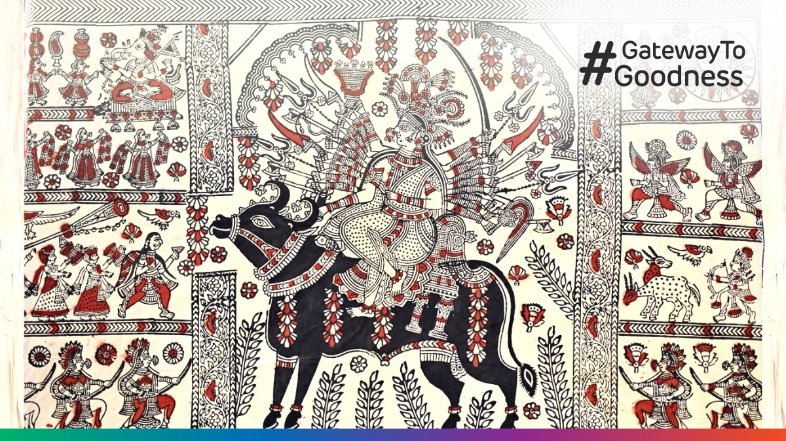
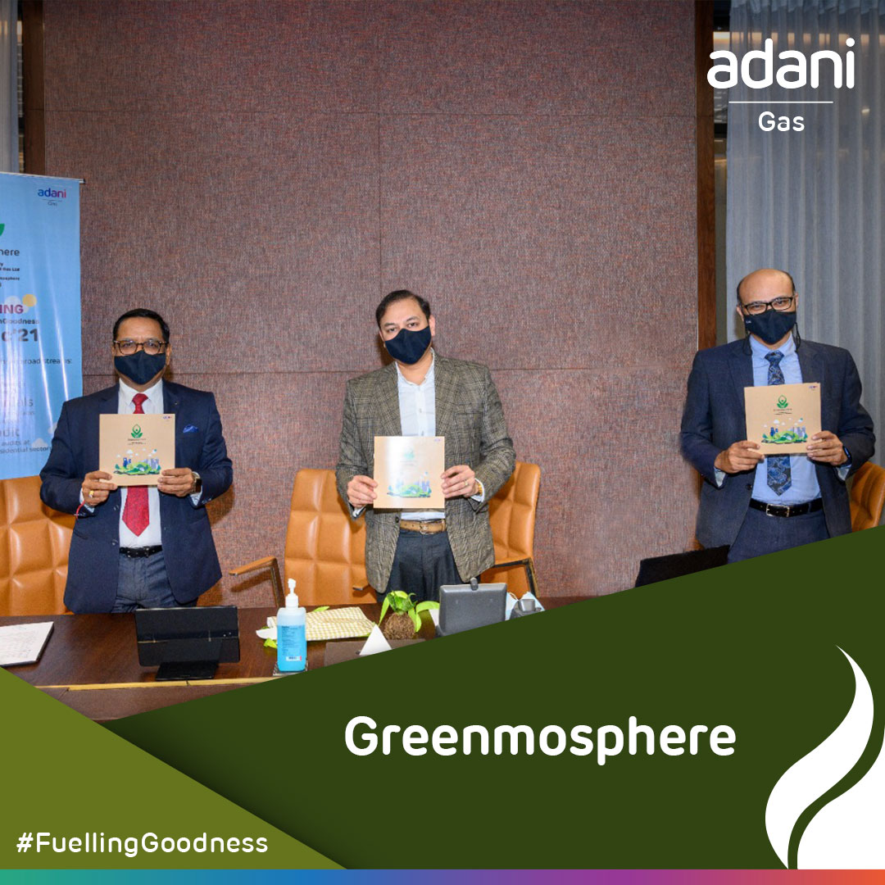
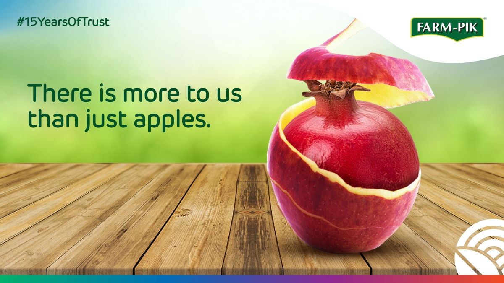

Featured Work

One Nation Billion Celebrations
Consumer storytelling at scale: Helping one of India's largest infrastructure companies reinvent itself as a consumer-first digital ecosystem.
Where Forever Young Begins
Changing how people think about hearing: reframing clinical hearing aids as high-performance wellness wearables.

Hum Karke Dikhate Hain
Humanizing Infrastructure: Building a storytelling platform for one of India's largest conglomerates.
Maha Kumbh
When corporate reputation meets culture: on-ground PR and digital video engagement at the world's largest gathering.

Adani Group Unveils Succession Plan
One interview. Five stories. One narrative: architecting high-stakes leadership narratives for global media and investor transitions.

FarmPik (D2C) 15 Years of Trust
Fifteen years of trust, told through people and place: anchoring corporate credibility through long-term grassroots equity.